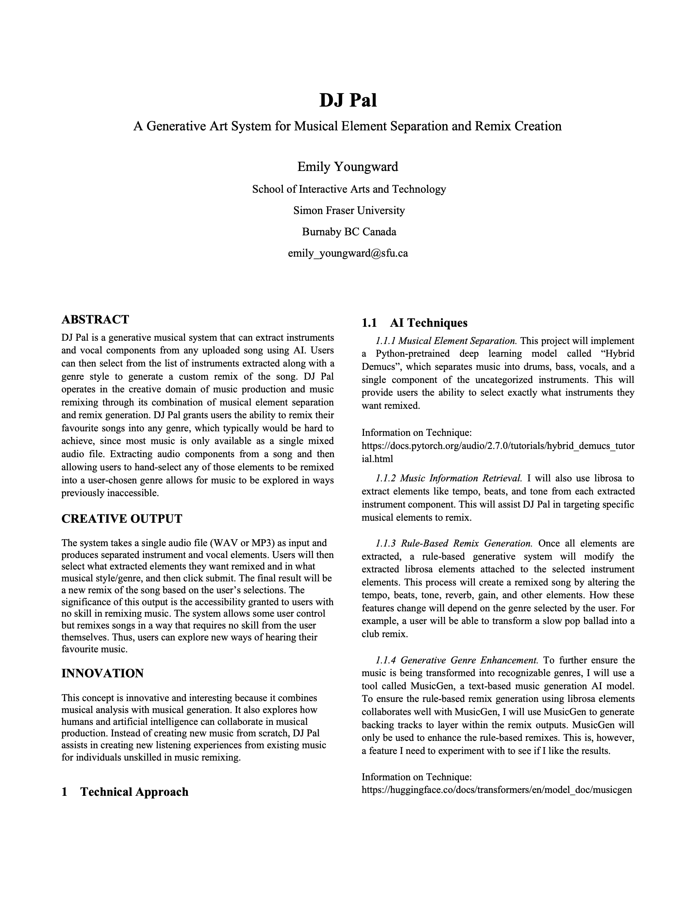
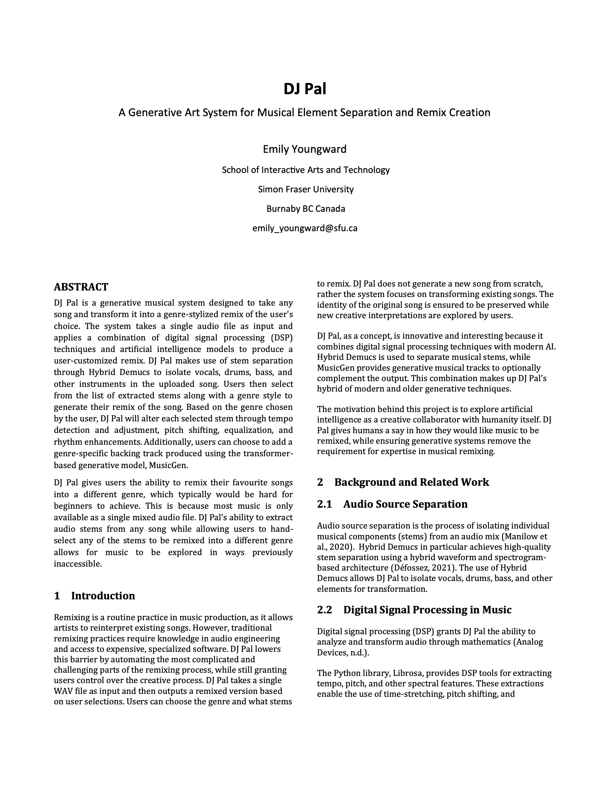

01 / Overview
A more accessible way to experiment with music remixing
DJ Pal is a generative music remixing system I developed as a solo project.
I wanted to make it possible for someone without audio-engineering experience to experiment with a
remix without having to edit individual tracks manually.
The user makes two main creative decisions: which parts of the song to
transform and which genre to explore. DJ Pal handles the technical work, using
Hybrid Demucs to separate the song into vocals, drums, bass, and other instruments before
applying genre-specific processing to the selected stems.
The processing combines tempo and pitch changes with equalization, reverb,
distortion, gain adjustments, and percussive emphasis. MusicGen can also generate a short
backing track that adds another layer to the remix.
I was interested in using AI as a creative collaborator rather than
asking it to generate an entirely new song. The original recording remains the foundation,
while the system takes care of the more technical steps and leaves the creative choices with the user.
02 / Motivation
Exploring AI as a creative collaborator
Remixing is a common part of music production, but creating a remix traditionally requires knowledge of audio engineering and access to specialized software. I wanted to explore whether AI and automated audio processing could handle some of that technical complexity while still allowing the person using the system to make creative decisions.
This led to the idea for DJ Pal: instead of asking a user to learn how to manipulate individual audio tracks, the system handles the technical processing while the user decides what parts of the song to change and what genre they want to explore.
The project also gave me an opportunity to explore computational creativity through music. I was particularly interested in how a system could transform an existing creative work rather than simply generate something completely new.

View project proposal PDF ↗
03 / System architecture
From an uploaded song to a remix
DJ Pal is organized as a multi-step audio pipeline. The uploaded file is converted to WAV for
processing, separated into stems, transformed according to the selected genre, and recombined into a
normalized remix.
Hybrid Demucs separates the song into vocals, drums, bass, and other instruments.
Working with these stems individually means the user can, for example, change the drums and bass
while leaving the vocals untouched.
After separation, DJ Pal applies the selected genre rules only to the chosen stems.
The processed and untouched stems are recombined, and an optional MusicGen backing track can be tempo-adjusted,
looped with crossfades, and layered into the result before export.
04 / Audio separation
Breaking a song into its building blocks
One of the most important parts of DJ Pal is its use of Hybrid Demucs for music source separation. A typical song is provided as one mixed audio file, making it difficult to change individual musical elements independently.
Hybrid Demucs separates the input into four stems: vocals, drums, bass, and other instruments. This allows DJ Pal to apply transformations selectively. For example, a user can choose to remix only the drums and bass while leaving the vocals unchanged.
This separation step is what makes the user's choices possible. Instead of applying a filter or effect to the entire song, DJ Pal can work with individual musical components and preserve stems that the user does not want to change.
05 / Genre transformation
Turning audio features into genre rules
I implemented twelve genre options in DJ Pal: EDM, Hip-Hop, Lo-Fi, Rock, Industrial,
Punk, Pop, Metal, Cinematic, Grunge, Dubstep, and Techno.
Each genre is defined through a combination of target tempo, target key, gain, reverb,
percussive emphasis, and additional processing rules. I also used genre-specific EQ and
distortion where appropriate to make certain transformations more distinct.
I used Librosa and other Python audio libraries to apply these transformations.
Tempo changes are handled through time stretching, while pitch shifting moves a stem toward the genre's
target key. I estimated the dominant pitch class using chroma features and used the result to determine
the pitch-shift interval.
Harmonic-percussive source separation is also used to isolate rhythmic elements within a
stem before recombining them with a genre-specific percussive boost. Together, these techniques create
consistent transformation rules while keeping the original song and the user's selected stems at the
centre of the remix.
06 / Generative AI
Adding MusicGen to the remix
I also integrated MusicGen, a transformer-based generative music model, as an
optional part of the remixing process.
Rather than using MusicGen to replace the original song, DJ Pal uses it to
create a short genre-specific backing track. The generated audio is tempo-adjusted to the remix,
looped with crossfades, and layered underneath the existing stems.
Keeping the generated track short helped reduce the processing time required by the system.
It also allowed MusicGen to enhance the genre characteristics of the remix without taking over
the structure of the original song.
Through testing, I found that the MusicGen backing track often made the genre transformation more
noticeable than the rule-based processing alone, particularly for transformations such as EDM.
07 / Interface and workflow
Making the audio pipeline into a simple interface
I built the interface in Gradio so users could work with the audio pipeline without
interacting with Python code or audio-processing libraries directly.
The workflow is deliberately step-by-step: upload a track, preview the separated stems,
choose which parts to transform, select a genre, and decide whether to add a MusicGen backing track.
Keeping the controls focused on stems and genre lets users make the main creative
decisions without needing to understand the underlying audio-processing settings.
08 / Evaluation
Testing the results
I evaluated the remixes through listening tests and by comparing the original and processed audio.
I generated Mel spectrograms, onset-strength plots, chroma visualizations, and RMS energy graphs to
examine changes in frequency content, rhythm, pitch distribution, and overall energy.
The results varied with the source recording and the stems selected.
Lo-Fi processing generally reduced energy and softened higher frequencies, while
EDM transformations were more noticeable when the MusicGen backing track added rhythmic
and frequency content.
09 / Outcome
A working AI-assisted remixing system
The final result is a working audio remixing system that combines AI-based stem separation, digital signal processing, and generative music into a single pipeline.
Users can upload a song, preview its separated components, select individual stems to transform, choose from twelve genres, and optionally add an AI-generated backing track. The system then processes the selected audio and produces a downloadable remix.
Testing showed that DJ Pal can create recognizable genre transformations, although the results vary depending on the original song and which stems are selected. The strongest transformations were generally produced when MusicGen was used alongside the rule-based audio processing.
The project demonstrated that a relatively complex audio-processing workflow could be packaged into an interface where the user only needs to make a few creative decisions while the system handles the underlying technical processing.
10 / Challenges
Working with the limitations of AI audio
One of the biggest challenges was maintaining useful results after stem separation. The quality of the separated audio depends on the original recording, and some songs do not contain enough distinct instrumental elements for every transformation to have a noticeable effect.
Pitch shifting also presented challenges, particularly with vocals. Larger pitch changes could produce unnatural-sounding vocals, so I added limits to how much the vocal stem could be shifted.
Processing time was another consideration. DJ Pal relies on Hybrid Demucs for stem separation and can optionally run MusicGen to generate an additional backing track, making the full remixing process relatively slow.
MusicGen also produces short audio clips, so the generated backing track needs to be tempo-adjusted and looped rather than generated for the full length of the song. These limitations influenced how I designed the system and helped me understand the trade-offs involved when combining machine learning models with traditional audio processing.
11 / Reflection
What I learned
DJ Pal brought together machine learning, digital signal processing, audio analysis,
generative AI, and interface development in one working system. Building the full pipeline gave me
experience connecting these areas rather than treating them as separate experiments.
The project also changed how I think about AI in creative tools.
DJ Pal does not hand every decision to a model: the user chooses the stems and genre,
while the system handles the technical transformations that would otherwise require audio-production
knowledge.
The rule-based DSP gives the remix consistency and control, while MusicGen can add variation and
make some genre changes more recognizable. Testing both approaches helped me see where each method
was useful and where its limitations appeared.
If I continued the project, I would focus on faster processing, improved stem separation, controls for
adjusting effect intensity, more natural vocal pitch-shifting, and options for combining or customizing genres.

View final paper PDF ↗